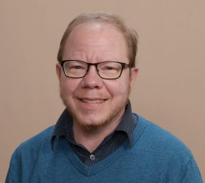

About
Update: as of March 2019 I am no longer in practice.
I’m Les Witherspoon ND, a licensed naturopathic physician providing care to a diverse group of individuals from around the Puget Sound area. I have strong interests in LGBTQ health and transgender medicine; depression, anxiety and insomnia; fibromyalgia and hypermobility joint syndrome. I enjoy working with neurodiverse individuals who are on the autism spectrum, have Asperger Syndrome, or deal with ADHD. My practice is not limited to those groups and conditions, however. I provide general and primary care for a wide range of people and conditions.
I (and Meditrinalia Naturopathic as a business) do not discriminate based upon race, religion, dis/ability, national origin, sexual orientation, gender identification or lack thereof, family/household configuration, neurotypical or neurodiverse status, or political beliefs. My aim is to provide competent care that is also culturally sensitive.
I focus on offering “help without the hype”. The goal isn’t to be 100% natural. It’s to be functional, and to live a life that is as optimal as possible for that person. Even when someone has a chronic or incurable condition, in my belief there is almost always something that can be done to to help them live their lives as fully as is possible for that individual.
My undergraduate degree was in chemistry (mathematics minor) with some graduate biochemistry study. I therefore prefer treatments and approaches that have a reasonable basis in current scientific thinking.
To obtain my degree as a doctor of naturopathic medicine at Bastyr University: I put in five more years and over 4400 hours. My raining has included (but was not limited to):
- working with transgender patients at Verbena/Spectrum (a clinic located a Country Doctor), as well as additional training with a provider working with transgender individuals. I continue to obtain additional training in this area.
- Shifts focusing on patients with ADHD, depression, cancer, and elders dealing with multiple conditions.
- Working with urban underserved patients at Carolyn Downs Community Clinic. In my practice I continue to work with urban underserved populations.
- I have continued to take additional training in providing primary care that incorporates integrative health with conventional evidence-based standards of care, including attending CEUs offered for nurse practitioners.
- I’ve continued to obtain additional training in working with depression and anxiety, in working with older adults and with adolescents, and in the basics of medication management for mental health conditions.
- I have additional interests and training in CBT-I (cognitive-behavioral therapy for insomnia), and in botanical medicine formulation for digestive and respiratory conditions.
I am also adjunct clinical faculty at Bastyr Center for Natural Health, where I supervise teaching shifts on two days of the week. (As of March 2019 I am no longer adjunct clinical faculty at Bastyr Center for Natural Health).
I’m a member of the Washington Association of Naturopathic Physicians, the Naturopathic Academy of Primary Care Physicians, and the Gay and Lesbian Medical Association. When I’m not at the office, I enjoy debating current affairs and tech with all and sundry, cooking dinner with my partner, raising our kids, and trying to keep up with my ever-expanding booklist. I also have an interest in how technology can help improve healthcare delivery for both patients and the providers who serve them.